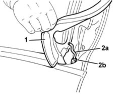
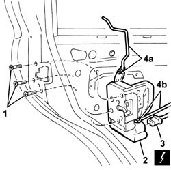

7010N20 rear side door lock motor/catch assembly - r r with door panel and support frame removed
- Path
- Procedures > 70 FITTINGS > 7010 PASSENGER COMPARTMENT REAR SIDE DOORS > 7010N rear side door central locking system > 7010N20 rear side door lock motor/catch assembly - r r with door panel and support frame removed
- Kind
- repair procedure (removal / refitting; the operation number is the code)
- Applies to
- all engines; all production periods
- Interactive page
- https://sloeber94.github.io/elrnDB-a147/en/#/3025729
Applies to: all engines; all production periods
 Removing
Removing
 Refitting
Refitting5570T96 rear side speaker - r r
7010A04 rear side door water guard protection - r r or arrange with door panel removed
7010E93 partition on rear door, lh or rh - r r with door panel removed
7010C11 rear side door outside handle-r r
7010D22 rear side door descending window glass guide (one) - r r with door panel (and support frame) removed (for the rear guide only)
1. Release the lower rear edge of the trim for the outer handle.
2. Disconnect the outer opening rod (2a) from the retainer (2b).

Applies to: all engines; all production periods
1. Unscrew the catch retaining bolts.
2. Move the lock and rods.
3. Disconnect the electrical connections.
 | Name | Connector |
|---|---|---|
3 | Left rear. door lock geared motor |
| Name | Connector |
|---|---|---|
3 | Rear door lock geared motor right |
4. If necessary, disconnect the outer opening rod (4a) and the inner opening rod (4b) from the lock.

Applies to: all engines; all production periods
Refitting
RemovingCheck that the lock is intact and undamaged.
If removed, connect the inner and outer opening rods to the lock.
Connect the electrical connection to the lock.
Position the lock and rods.
Tighten the lock retaining bolts.
 | Fastening | Component | Ø | Value (daNm) |
|---|---|---|---|---|
- | Bolt | REAR DOOR LOCK MECHANISM | M8 | 1.6 |
Connect the outer opening rod to the retainer.
Fit the lower rear edge of the trim for the outer handle.
7010D22 rear side door descending window glass guide (one) - r r with door panel (and support frame) removed (for the rear guide only)
7010C11 rear side door outside handle-r r
Check that the lock works by operating the outer handle.
7010E93 partition on rear door, lh or rh - r r with door panel removed
7010A04 rear side door water guard protection - r r or arrange with door panel removed
Topics linked from this page (8)
- 5570T96 rear side speaker - r r
- 7010A04 rear side door water guard protection - r r or arrange with door panel removed
- 7010C11 rear side door outside handle-r r
- 7010C54 rear side door internal opening return mechanism (with handle) - r r for repair or replacement with door panel removed
- 7010D22 rear side door descending window glass guide (one) - r r with door panel (and support frame) removed
- 7010E93 partition on rear door, lh or rh - r r with door panel removed
- N55 Left rear. door lock geared motor
- N56 Rear door lock geared motor right